轻松上手markdown（非CS专业友好版）
markdown是一种轻量级标记语言，它允许人们使用易读易写的纯文本格式编写文档，然后转为网页或pdf进行阅读。在很多时候，我们的报告都是通过markdown完成的。闲言少叙，我们直接开始！
目录
环境搭建
编辑器安装
插件安装
创建文件
基本语法
标题
段落
文本
列表
表格
图片
链接
代码块
环境搭建
编辑器安装
在这里我们选择使用Visual Studio Code作为我们的编辑器。它的编辑界面是这样的：
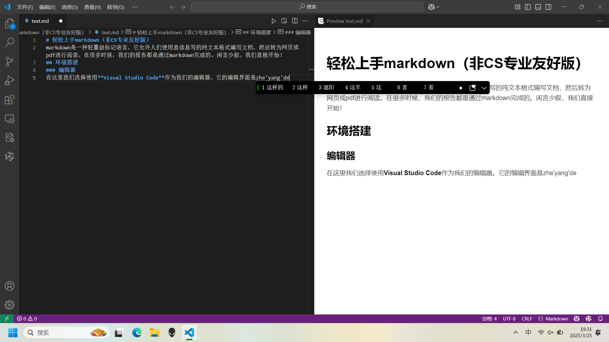
此处禁止套娃
首先要访问Visual Studio Code官网下载安装。
点击Download 按钮，选择适合自己系统的版本点击安装，计算机将下载一个VS Code下载器。
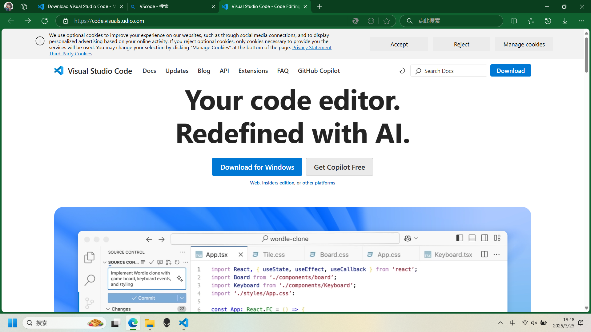

下载器就绪后直接双击打开，同意协议后点击下一步。

这里是一些安装选项，建议勾选创建桌面快捷方式，然后点击下一步->安装。
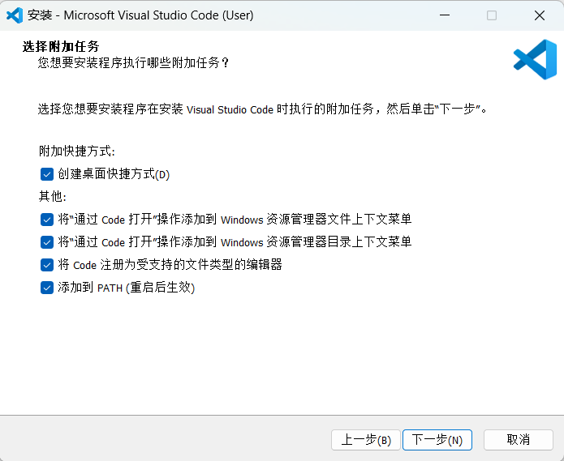
注意：如果安装时勾选了“将“通过Code打开”操作……”的选项，安装后右键点击文件弹出的旁栏就会显示“通过Code打开”的选项，不希望自己旁栏太过复杂的同学可以取消勾选这两项。
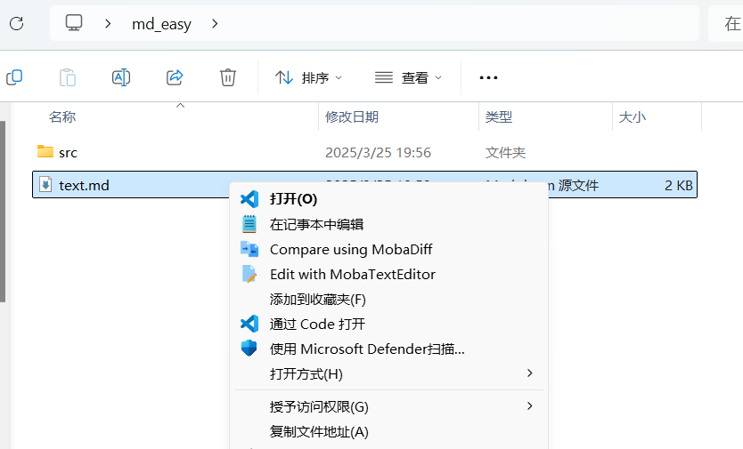
插件安装
目前在VS Code中下载量最高的markdown插件是 Markdown All in One ，安装后，我们可以在编辑器中看到一些预览效果。
首先，点击VS Code编辑区左栏四个小方块的图标，在弹出的搜索栏中搜索Markdown All in One，点击安装即可。如下图所示：
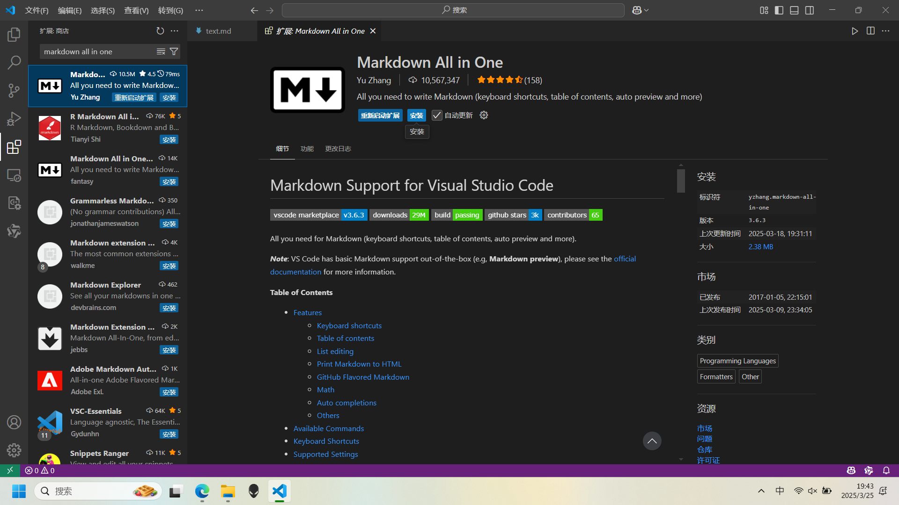
创建文件
markdown文件的后缀名是.md，打开VS Code，点击左上角的文件按钮，在弹出的菜单中选择新建文件（例如test.md）。如下图所示，在弹出的输入框中输入文件名，点击确定。
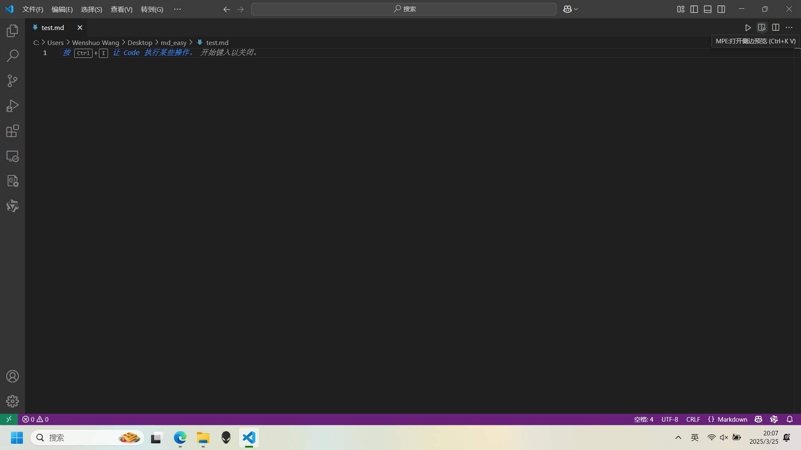
如上图所示，点击图中鼠标指示的位置可以打开预览，在这里可以实时看到你写的内容。

此处禁止套娃
基本语法
标题
标题的格式是# + 空格 + 标题内容,例如：

markdown最多支持6级标题，如图所示，#越多，标题越小。
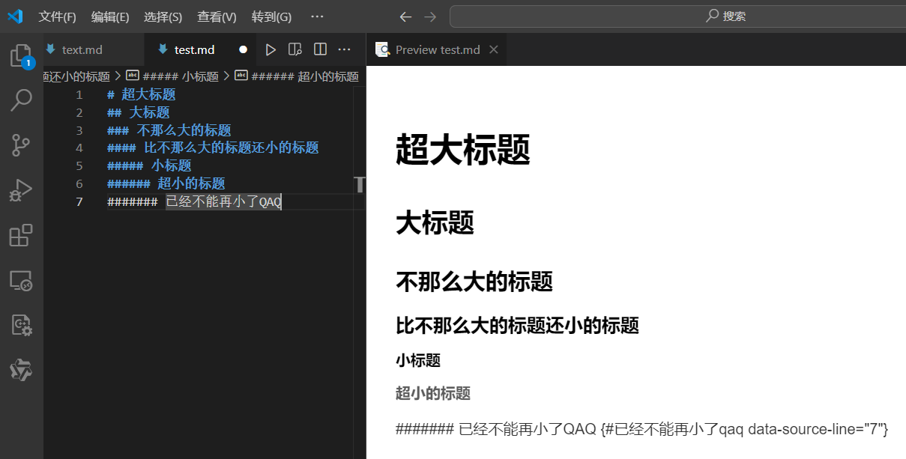
#超过6个时将会以纯文本形式输出。
段落
如果你想要分开段落，只需要多打一个空行，这和我们的直觉一致。下图展示了分段和不分段的效果。
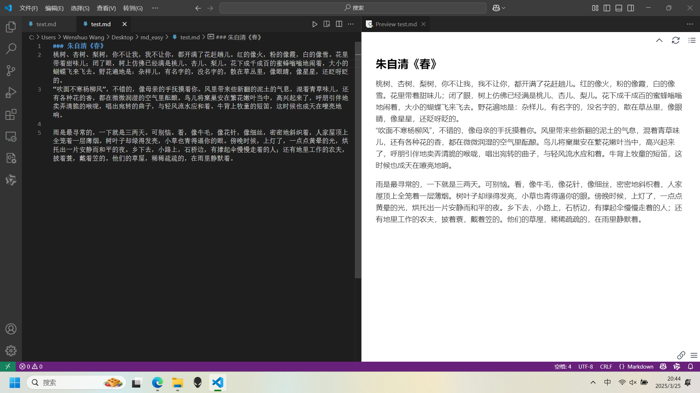
文本
markdown支持以下几种文本格式：
- 普通文本：直接敲出即可
- 斜体：使用
_或*将希望倾斜的文本括起来 - 粗体：使用
**将希望加粗的文本括起来 - 删除线：使用
~~将希望删除线的文本括起来 - 引用：将
>加在在文本前面即可 - 代码：使用“
"将`将希望显示为代码的单行文本括起来
如下图所示:
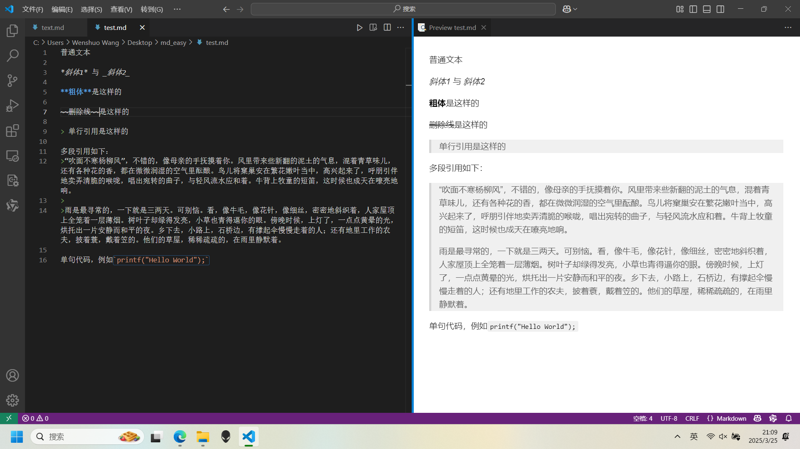
列表
markdown支持有序列表和无序列表，有序列表使用数字加.，无序列表使用*或-。
示例如下：

表格
markdown支持表格，表格的格式是：
| 标题1 | 标题2 | 标题3 |
| --- | --- | --- |
| 内容1 | 内容2 | 内容3 |
| 内容4 | 内容5 | 内容6 |
示例如下：
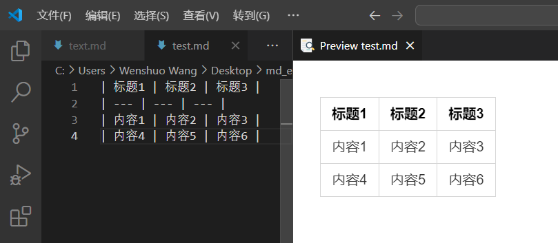
你可以在短横线行中通过添加冒号 : 来指定每一列的对齐方式：
- 左对齐：默认，或在短横线左边添加冒号
:--- - 右对齐：在短横线右边添加冒号
---: - 居中对齐：在短横线两边都添加冒号
:---:
示例如下：

图片
markdown支持本地图片和网络图片。
插入图片的基本格式如下，注意前面的感叹号和后面的括号都必须是英文字符。

对于本地图片，例如：

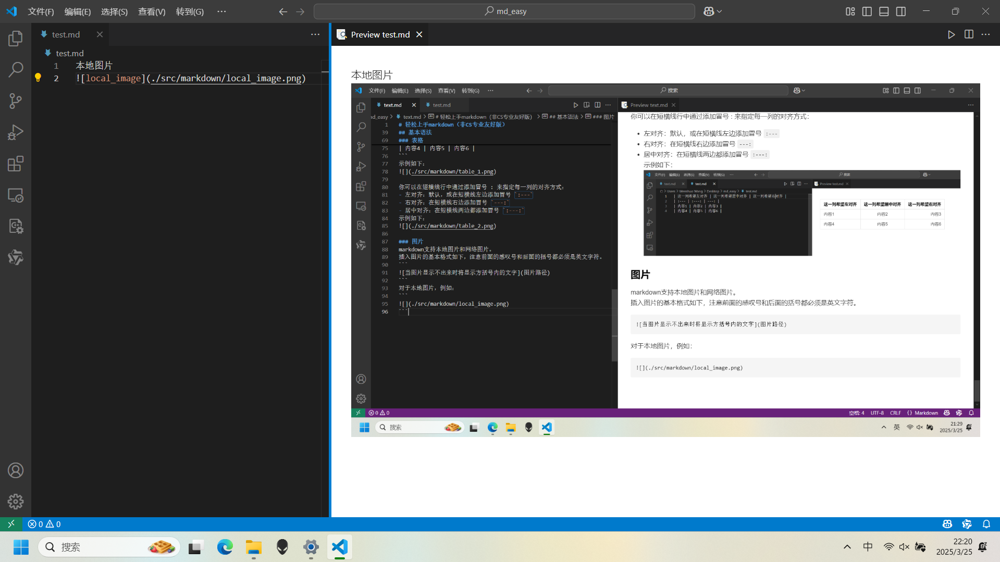
对于网络图片，例如：

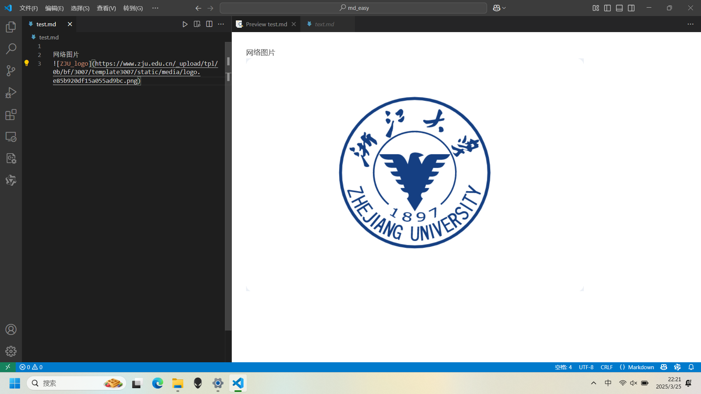
链接
markdown支持网络链接，格式为：
[链接文字](链接路径)
例如：
首先要访问[Visual Studio Code](https://code.visualstudio.com/)官网下载安装。
效果如图所示

点击蓝色的字后将自动通过浏览器打开链接。
代码块
在之前我们已讲过句中单行代码的格式，例如：
这是一行代码：`printf("hello world");`

在markdown中同样可以使用代码块，格式为：
这是一段代码：
```
#include <stdio.h>
int main()
{
printf("hello world");
return 0;
}
```
或
~~~
#include <stdio.h>
int main()
{
printf("hello world");
return 0;
}
~~~

值得一提的是，markdown同样可以在开头的三个```中指定语言，进而实现代码高亮。
例如C语言：

硬件描述语言也可以
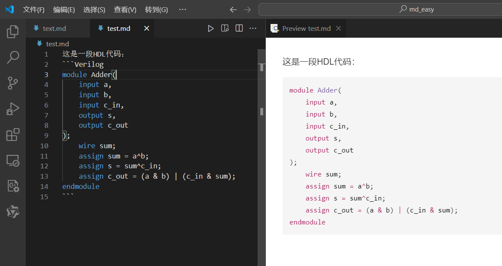
甚至是markdown本身：

Makefile、Bash.sh等也都可以。
以上就是markdown的基础语法，更多语法可以参考markdown中文。
这个教程也是使用markdown完成的，如果你希望下载这个文档，可以点击这里。
作者酷爱套娃